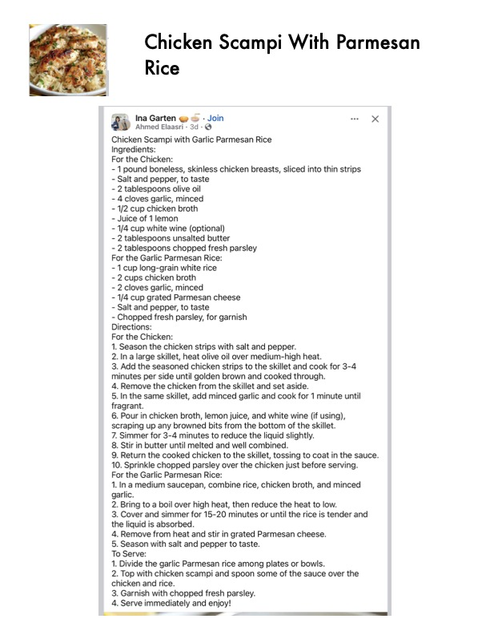

Chicken Scampi With Parmesan

Original cookbook page 761
Ingredients
- For the Chicken:
- - 1 pound boneless, skinless chicken breasts, sliced into thin strip
- - Salt and pepper, to taste
- - 2 tablespoons olive oil
- - 4cloves garlic, minced
- - 1/2 cup chicken broth
- - Juice of 1 lemon
- - 1/4 cup white wine (optional)
- - 2 tablespoons unsalted butter
- - 2 tablespoons chopped fresh parsley
- For the Garlic Parmesan Rice:
- - 1 cup long-grain white rice
- - 2 cups chicken broth
- - 2 cloves garlic, minced
- - 1/4 cup grated Parmesan cheese
- - Chopped fresh parsley, for garnish
Instructions
- For the Chicken:
- Season the chicken strips with salt and pepper.
- In a large skillet, heat olive oil over medium-high heat.
- Add the seasoned chicken strips to the skillet and cook for 3-4 minutes per side until golden brown and cooked through.
- Remove the chicken from the skillet and set aside.
- In the same skillet, add minced garlic and cook for 1 minute unt fragrant.
- Pour in chicken broth, lemon juice, and white wine (if using), scraping up any browned bits from the bottom of the skillet.
- Simmer for 3-4 minutes to reduce the liquid slightly.
- Stir in butter until melted and well combined.
- Return the cooked chicken to the skillet, tossing to coat in the s For the Garlic Parmesan Rice:
- Ina medium saucepan, combine rice, chicken broth, and mince garlic.
- Bring to a boil over high heat, then reduce the heat to low.
- Cover and simmer for 15-20 minutes or until the rice is tender é the liquid is absorbed.
- Remove from heat and stir in grated Parmesan cheese.
- Season with salt and pepper to taste. To Serve:
- Divide the garlic Parmesan rice among plates or bowls.
- Top with chicken scampi and spoon some of the sauce over the chicken and rice.
- Garnish with chopped fresh parsley.
- Serve immediately and enjoy! _—~ a —,
Recipe #761 from collection